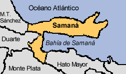
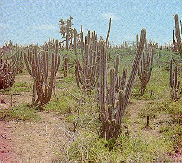
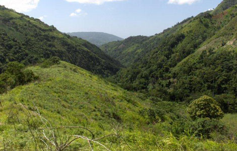

Esta sierra se extiende por toda la peninsula de samaná, con una longitud de 60 km. Sus mayores altitudes son: La Mesata(605m.),Las Cañitas (546m.) y Pan Azucar(493m.).
Este sistema montañoso, en el territorio haitiano, recibe el nombre de cadena de Trou D'
Eau y Caderna de Matheaux.Esta situada al norte del
En este se destaca la Loma del Cura (1,343 m.) y Loma Fria (1,285 m.), como sus mayores elevaciones. Constituye el sistena montañoso mas despoblado de la Republica Dominicana.

Esta sierra es abruptada con escaza poblacion. Sus mayores elevaciones son Loma El Toro (2,367 m.) situada proximo a la linea fronteriza entre Haiti y la Republica Dominicana; En Haiti El Macizo de La Selle con el pico La Selle (2,675 m.), que a la vez es la altura maxima en Haiti.
